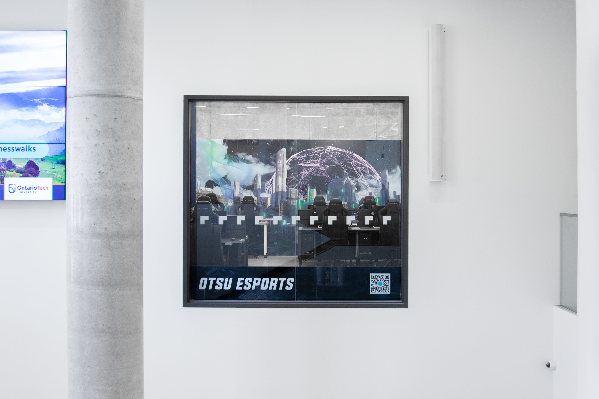
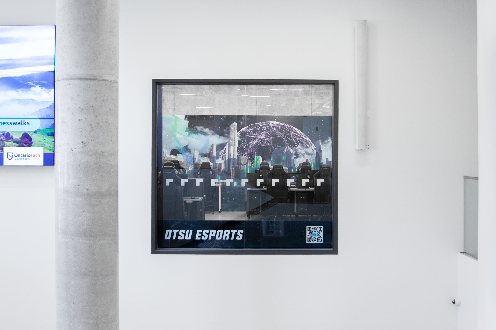
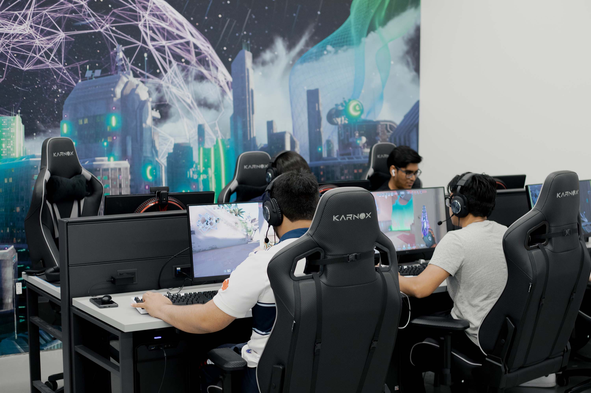
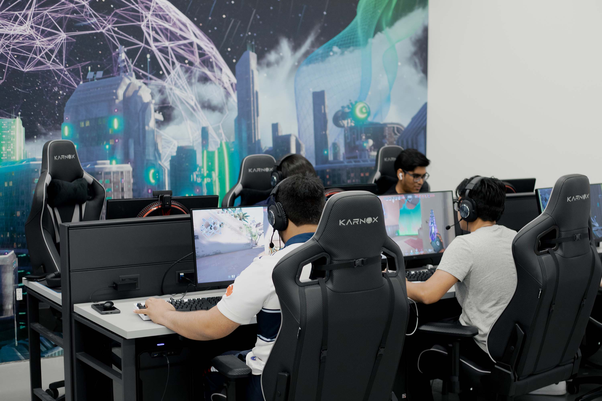

OTSU Esports Arena Mural
Ontario Tech Student Union, 2022
In 2020, the Ontario Tech Student Union’s (OTSU) esports club evolved from a student-run club to an official service offered by the student union — becoming one of the first universities in Ontario to offer support for esports in an official capacity. In preparation for the grand opening of the new OTSU esports arena, I was tasked with designing a mural for a 10’x16’ concrete wall that was visible through a peek-a-boo window to all who walked through the atrium of Ontario Tech University’s newest building, Shawenjigewining Hall.
The goal was to create something that was inline with the existing OTSU Esports branding but wasn’t corporate. We wanted to create an authentic space for esports fans and players with a visual representation of the world and growth of esports that would not become dated.
We consulted the Ontario Tech esports community through our Discord channel of over 2000 members for their input. Common themes included “dark, moody, and cozy”. The result is a custom photo composite of a futuristic cyberpunk-inspired cityscape. The mural has become an integral part of the OTSU Esports branding, and is featured on brand collateral like the OTSU Esports website.

 

 
